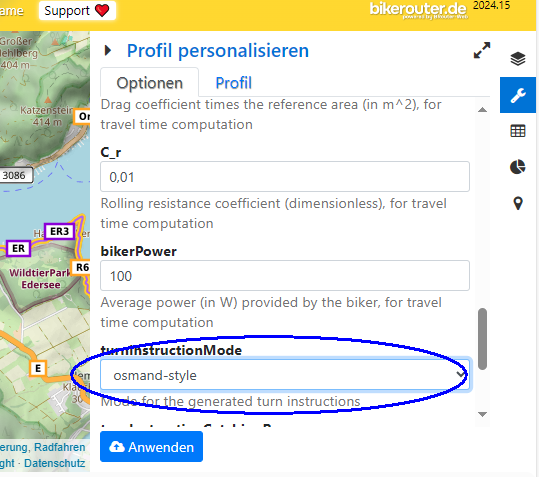

Help
ContentHow to use
- Select the GPX file to be converted
- You can also select a previously created FIT to continue editing
- Verify that your route is correct. If not go back to your route-planer.
Otherwise you probably have to re-do some steps - Click on point of the route where you like to insert a turn instruction
- Of course if You don't need those you can skip it
- See shortcuts below to speed up for multiple points
- Amend the average speed to your desired value
- Optional
- This helps with displaying the expected time for the route
- Download will save the course as a FIT file
- Open the FIT on your Phone to Import with the App of your Navigation Device
Shortcuts while adding turn instructions
After click on a point you can use keys to quickly set the turn.
- q
- slight left
- w
- straight
- e
- slight right
- a
- left
- s
- u-turn
- d
- right
- y/z
- sharp left
- x
- generic/other
- c
- sharp right
Split Route into multiple Files
The app also enables you to generate multiple FIT files form a single input route. Meaning
you can break large routes into smaller chunks to avoid overloading your navigation device
- or just build daily targets.
This works just like adding a turn instruction: Click on the route and select "Split Track
here". While saving your browser will now download multiple files.
Find Climbs
This is intended to be a poor mans version of modern devices "climb pro" or a like.
But if (like me) you prefer just a simple one-time message for really important climbs it might be also for you.
It's currently still very much WIP.
Get POIs for your route
For (long-distance) bike riding you may find my POIs Tool to get a list of usefull locations near your route.
Tip: Get Route with turn instructions
This App also supports a GPX file with already embedded turn instructions.
Sadly for GPX files turn instructions are multiple different proprietary extensions. The app supports the style used by osmand.
One way (of likely many) to create such a GPX route is to use a brouter based application. I know of these web-frontends:
- bikerouter.de (active development)
- brouter.de/brouter-web (a bit stale)
- select the profile settings (wrench on the left)
- Change this option:
 - Save the profile
- Now you can export the GPX
Credits
- Code for this Version
-
You may report Bugs/Spelling mistakes/Questions via E-Mail IF you can Include the problematic File.
Please note that this app was build primarily for my personal use. - Original Version
- Main Lib: Leaflet